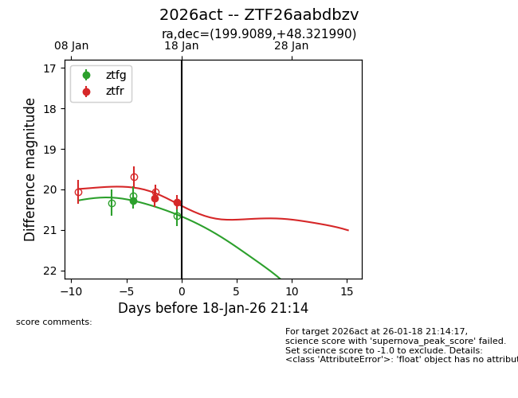
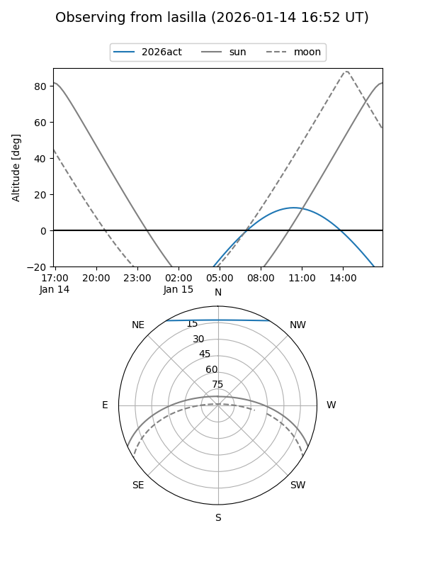
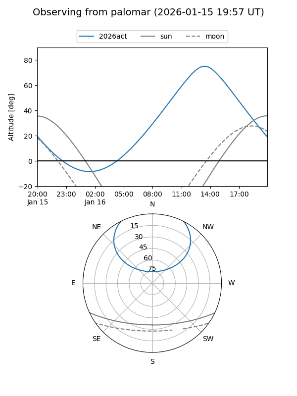
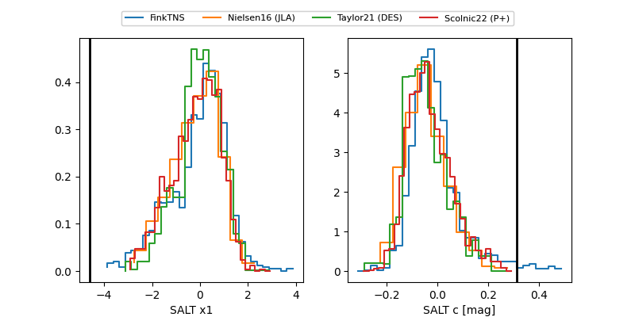

2026act
Target 2026act at 2026-01-14 22:05
Aliases and brokers:
FINK: link
Lasair: link
ALeRCE: link
TNS: link
YSE: link
alt names
ZTF26aabdbzv (ztf,fink_ztf)
2026act (tns,yse)
Coordinates:
equatorial (ra, dec) = 199.9089,+48.32199
equatorial (HMS+DMS) = 13:19:38.14,+48:19:19.16
galactic (l, b) = (110.2894,+68.10822)
Flags:
Photometry:
last ztfg=20.28
1 ztfg detections
Lightcurve

Visibility


Additional plots
